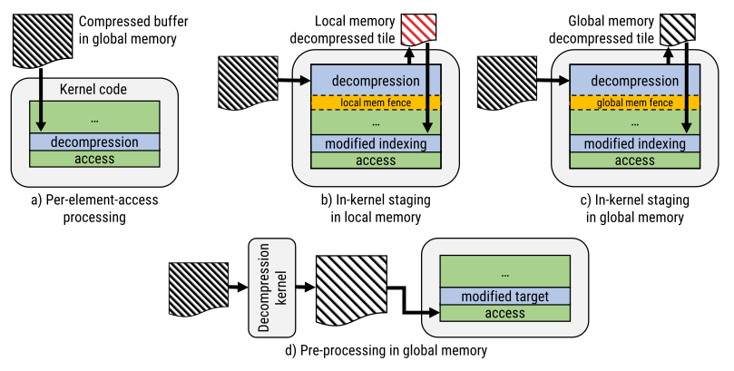
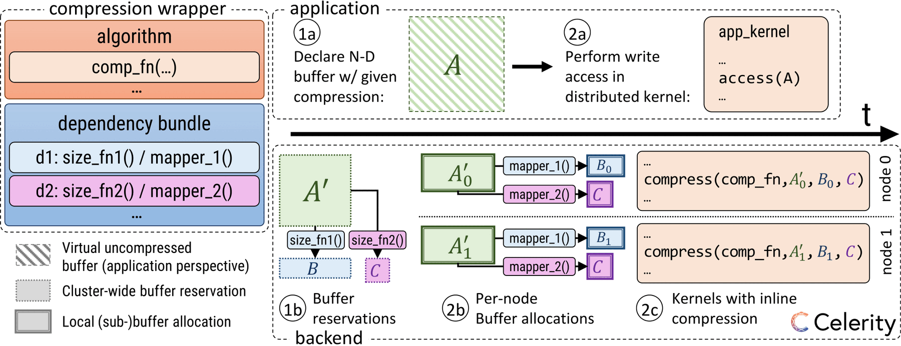
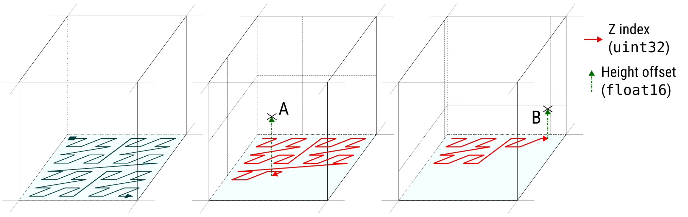
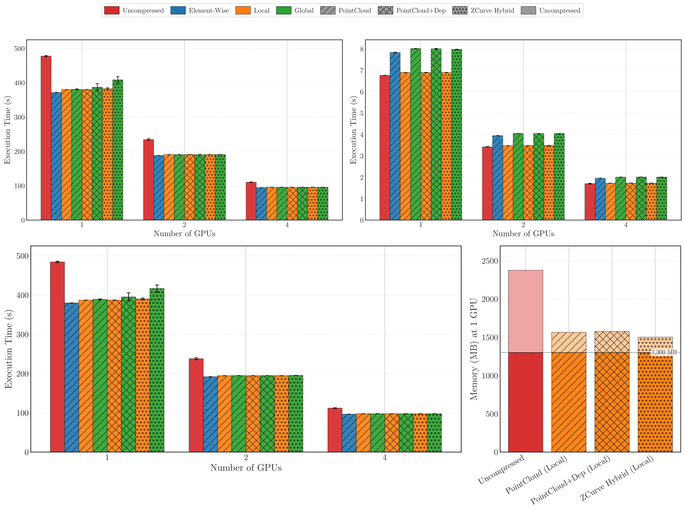
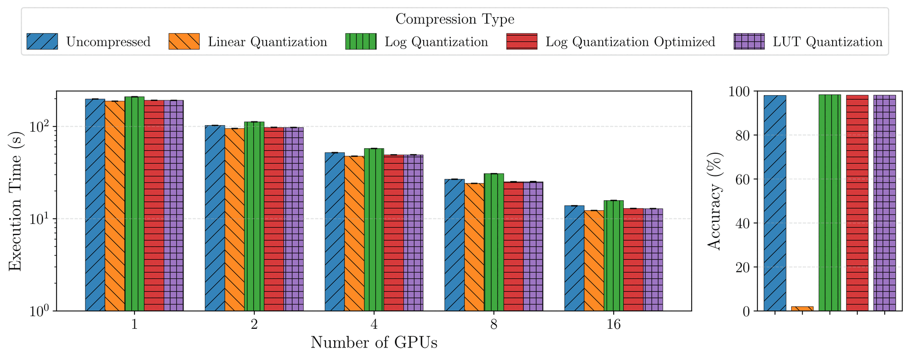
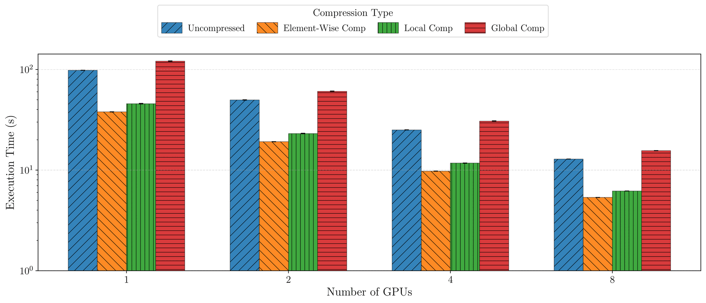

Background
High-performance data compression can alleviate capacity bottlenecks and even improve performance in GPU compute applications, by reducing memory bandwidth requirements. However, integrating compression throughout the entire data processing pipeline is a non-trivial task, especially in multi-GPU environments, and doing so manually tends to bake in assumptions that make it difficult to experiment with different compression methods, particularly domain-specific ones that exploit the structure of a specific kind of data.
UMUGUC was a research project that set out to make such compression methods easy to use in multi-GPU cluster applications, without requiring application developers to write any compression-specific code, and without requiring compression-algorithm developers to deal with the complexities of distributed execution, data movement, or synchronization.
Make it easy to work with end-to-end compressed (dense) data in multi-GPU programs — including custom, domain-specific compression algorithms.
How It Works
UMUGUC extends the buffer/accessor programming model of the Celerity runtime system with a
compressed<...> buffer type. Compressed data is decompressed transparently
whenever a kernel accesses it, using one of four compression categories, illustrated below: element-wise
compression of individual values, local-memory and global-memory compression of whole tiles/chunks of data, and
traditional, application-level kernel compression.

The project's main contribution is an extension that lets developers plug in their own domain-specific compression
algorithms — including ones that need auxiliary buffers or per-tile metadata — without touching Celerity's distributed
execution model at all. A compression method is expressed as a wrapper bundling (i) the numerical compress/decompress logic and (ii) a
dependency_bundle describing any auxiliary buffers it needs, along with how those
buffers should be distributed relative to the compressed data. Given just this wrapper, Celerity automatically reserves the compressed
and auxiliary buffers, distributes them across GPUs and nodes, and routes execution to the right compression code — as
summarized below.

A user-defined compression bundle (left) is used to declare a compressed buffer (top); the runtime then reserves, distributes and populates the compressed buffer together with its auxiliary dependency buffers across GPUs and nodes (bottom).
Example: Z-Curve Point Cloud Compression
As a representative domain-specific algorithm, the project implemented z-curve compression for 3D point clouds, such as those produced by airborne LIDAR scanning. Points are quantized onto a 2D z-curve (a space-filling curve that preserves locality) within each grid cell, so that the X/Y position collapses into a single Morton-encoded index; the remaining Z-offset is stored separately as a half-precision value in an auxiliary dependency buffer.

Implementing this — and any other — domain-specific algorithm with the new API only requires two things: a small wrapper exposing the compression object and its dependencies, and the compress/decompress logic itself. Everything else, including allocation, distribution and synchronization of the auxiliary Z-offset buffer, is handled by the runtime:
using compression_t = z_curve_compression<Point, uint32_t, category::local_memory>;
compression_t z_curve{Point{x_min, y_min, 0}, xy_resolution};
// Compressed buffer instead of a regular one - same buffer/accessor API otherwise.
celerity::buffer<Point, 3, compression_t>
tile_points({width, height, points_per_tile}, z_curve);
queue.submit([&](handler& cgh) {
accessor tile_point_acc{tile_points, cgh, full_third_dim<3>{}, read_only};
... // kernel code accesses tile_point_acc exactly like an uncompressed buffer
});
Results
The final API was evaluated on three benchmarks — airborne point cloud processing, a Jacobi-style wave simulation, and a room-response simulation (RSim) — across three GPU platforms (a Leonardo supercomputer partition, a 4x RTX 3090 workstation, and an 8x NVIDIA L40S node), comparing compressed variants against uncompressed baselines.

Point cloud pipeline results: all compressed variants speed up the memory-bound tiling stage, and the domain-specific z-curve method reduces memory usage by up to 5.2× while still yielding a net end-to-end speedup.

RSim results: optimized logarithmic and lookup-table quantization outperform the uncompressed baseline while keeping accuracy loss within tolerance, and scale near-linearly up to 16 GPUs.

Wave Sim results: element-wise compression gives a stable ~2.5× speedup, while global-memory compression is the only category that underperforms due to extra memory traffic.
Across all three benchmarks, the best-performing compression category depends on the workload's access pattern — but in every case, the new API made it possible to reach that performance without any compression-specific code outside the algorithm's own wrapper. The design does have limits: compression logic must be expressible on the GPU, it primarily targets fixed-size (rather than e.g. entropy-coded) compression schemes, and writing a dependency's range mapper still requires understanding the algorithm's access pattern in detail.
Technology
UMUGUC was built on top of the Celerity runtime system, which provides a high-level programming model for distributed-memory clusters of GPUs. Celerity is built on top of the Khronos SYCL standard, and provides a data-parallel multi-GPU programming model with a single-source C++ interface. The UMUGUC project extended Celerity with the necessary abstractions to support end-to-end, domain-specific data compression.
Tooling
Alongside the API and its evaluation, the project produced a small set of supporting command-line and GUI tools, released separately in the umuguc/tooling repository:
- Data Converter — converts AirborneHydroMapping's HDF5-based airborne LIDAR point clouds into the plain, uncompressed binary point format used by UMUGUC's point cloud benchmark.
- Visualizer — an Open3D-based viewer for interactively inspecting point clouds and the pipeline's intermediate results, including height maps, spatial tile grids, and per-tile shape factors.
Both tools are self-contained CMake projects; see the repository's README for build instructions and usage details.
Publications & Talks
- Talk:
High-level Domain-specific End-to-end Compression in GPU Cluster Runtime Systems
Gabriel Mitterrutzner & Peter Thoman
HLPP'26: 19th International Symposium on High-level Parallel Programming and Applications (2026) - Journal Paper:
A High-level API for End-to-end Data Compression in Multi-GPU Cluster Applications
Gabriel Mitterrutzner, Peter Thoman & Philipp Gschwandtner
International Journal of Parallel Programming, 54(3) (2026) - Talk:
A High-level API for End-to-end Data Compression in Multi-GPU Cluster Applications
Gabriel Mitterrutzner, Peter Thoman & Philipp Gschwandtner
HLPP'25: 18th International Symposium on High-level Parallel Programming and Applications (2025) - Conference Paper:
Achieving High-throughput Strided Data Movement Across GPUs
Peter Thoman & Philipp Gschwandtner
IWOCL '25: Proceedings of the 13th International Workshop on OpenCL and SYCL (2025) - Talk:
Celerity - SYCL-Based High-Productivity Development at HPC Scale
Peter Thoman
PASC '25: Platform for Advanced Scientific Computing (2025) - Journal Paper:
Celerity-RSim: Porting Light Propagation Simulation to Accelerator Clusters Using a High-Level API
Peter Thoman, Philipp Gschwandtner, Facundo Molina Heredina & Thomas Fahringer
International Journal of Parallel Programming (2025) - Conference Paper:
SimSYCL: A SYCL Implementation Targeting Development, Debugging, Simulation and Conformance
Peter Thoman, Fabian Knorr & Luigi Crisci
IWOCL '24: Proceedings of the 12th International Workshop on OpenCL and SYCL (2024)
Partners & Funding
UMUGUC was funded by the Austrian Research Promotion Agency (FFG) under the BRIDGE programme, running from September 2023 to August 2026.
The project partners were the University of Innsbruck, and AirborneHydroMapping GmbH.
UMUGUC was coordinated by Peter Thoman.